2025-2026 Field Season Progress
Looking for the 2024-2025 Field Season Progress Page? CLICK HERE!
Looking for the 2023-2024 Field Season Progress Page? CLICK HERE!
2025-2026 Field Season Overview
The ANET-POLENET team is again working out of Union Glacier Camp, operated by ALE (Antarctic Logistics & Expeditions: https://antarctic-logistics.com/). After months of preparations and complicated behind-the-scenes logistical planning, the field season has finally arrived.
Text sent from lead-PI Terry Wilson:
The Antarctic Network of the Polar Earth Observing Network began during the International Polar Year in 2007-08, 19 years ago. In this, the 17th full field season for the project, GPS and Seismic instrument systems will be removed, as National Science Foundation funding is ending and NSF plans to fully remove the network. In the 2025-26 season, we plan to take out 9 seismic systems and 4 GPS systems from the network, as indicated on the map.
A field team of 6, all veterans of prior ANET-POLENET seasons, will complete the field work. The team includes lead Principal Investigator Terry Wilson and Eric Kendrick from Ohio State University, Erica Lucas from UC-Santa Cruz, Nicolas Bayou and Jim Normandeau from EarthScope and Mark Whetu of New Zealand. The work will be conducted using a Twin Otter aircraft contracted by NSF from Kenn Borek Air , piloted by Troy Mckerral and Marie-France Lavallée. Antarctic Logistics and Expeditions will support the field team from their Union Glacier camp, under contract from the NSF.
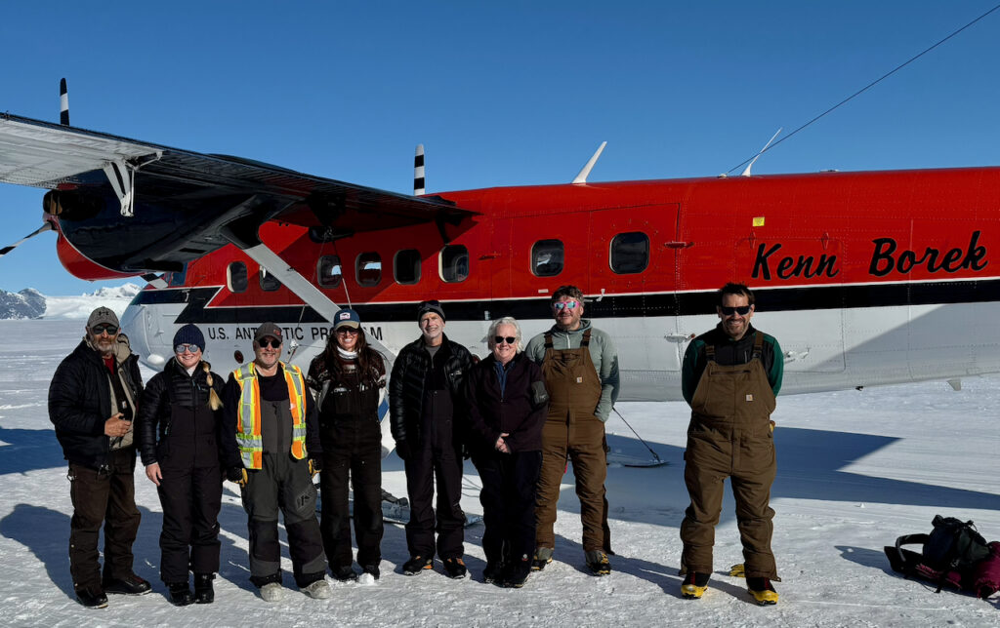
The 2025-2026 field team from left to right: Field Safety Guide Mark Whetu of New Zealand, Erica Lucas from UC-Santa Cruz, pilots Troy Mckerral and Marie-France Lavallée with Kenn Borek Air (KBA), Eric Kendrick and lead Principal Investigator (PI) Terry Wilson from Ohio State University, and Nicolas Bayou and Jim Normandeau from EarthScope. Photo credit: KBA crew member
ANET-POLENET 2025-2026 Field Season Progress Map
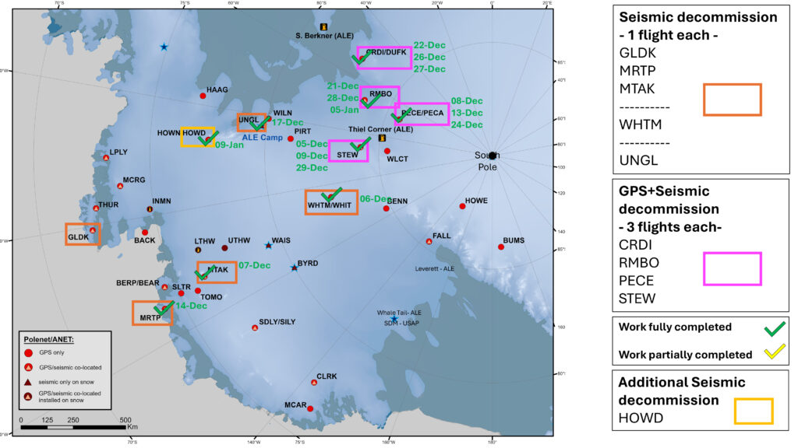
The below "Updates From the Field" are listed from newest to oldest. To start at the beginning of the field season, scroll to the bottom of the page.
Updates From the Field #24: Packed and Paused
10 January 2026, ALE Union Glacier Camp, Antarctica
With the 2025-2026 fieldwork flight window now complete, the team turns their attention to preparing for departure from Union Glacier Camp. Despite their best efforts to move quickly and be ready for their flight off the continent, unfavorable weather conditions kept the team grounded. The familiar Antarctic reality of “hurry up and wait” once again prevailed, where weather ultimately dictates flight schedules.
Text sent from lead-PI Terry Wilson:
Since we brought back the Howard seismic system the day before our planned departure, we had to scramble to both stage that cargo for shipping and get our personal gear packed for the planned check in for a flight to Punta Arenas today. The weather gods were not finished with us, however, and fog at Union Glacier resulted in a flight cancellation. We will try again tomorrow!
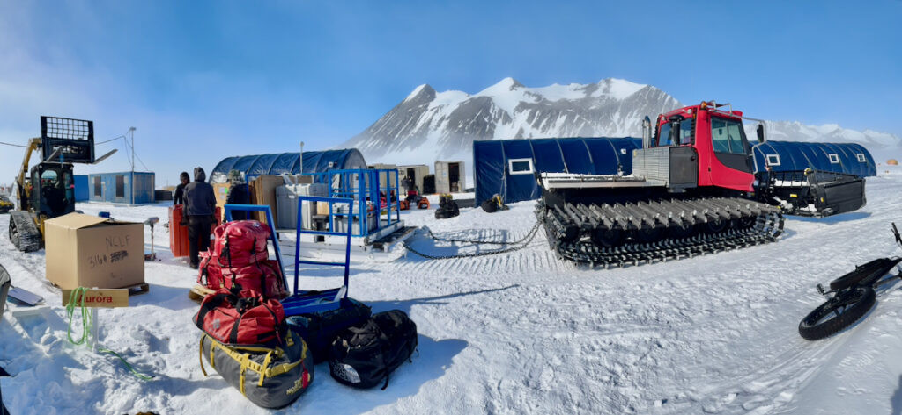
Above: Science cargo is weighed and loaded at Union Glacier Camp in preparation for the flight that will transport the team off the continent. Photo credit: Terry Wilson
Updates From the Field #23: Final Hurrah
9 January 2026, Howard Nunatak (HOWN/HOWD), Antarctica
Ending on a high note, the team completes one final successful field work mission, this time to Howard Nunataks.
Text sent from lead-PI Terry Wilson:
Everyone was glad to have the opportunity to fly to Howard Nunataks on Jan 9th to decommission the HOWD seismic system – a far more satisfactory way to end the season than a ‘boomerang flight’! There was plenty of cloud en route, but the area close to Howard was thankfully clear. The HOWD instruments were deployed in 2008 during the International Polar Year, so have delivered data for over 17 years.
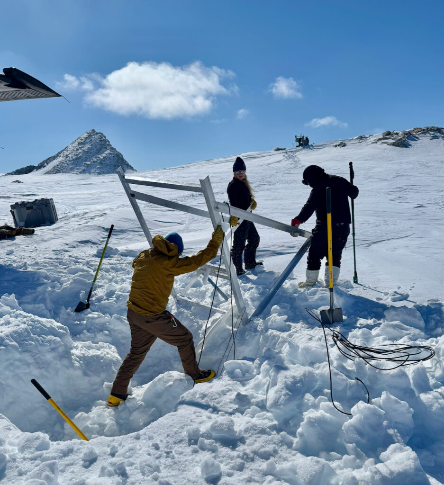
Above: The team pulls out the solar frame at seismic site HOWD at Howard Nunataks. Photo credit: Terry Wilson
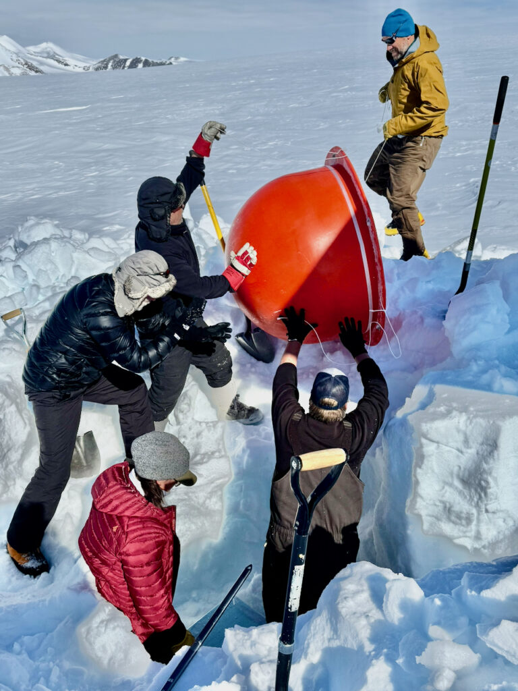
Above: The team extracts the seismometer at seismic site HOWD at Howard Nunataks. Photo credit: Terry Wilson
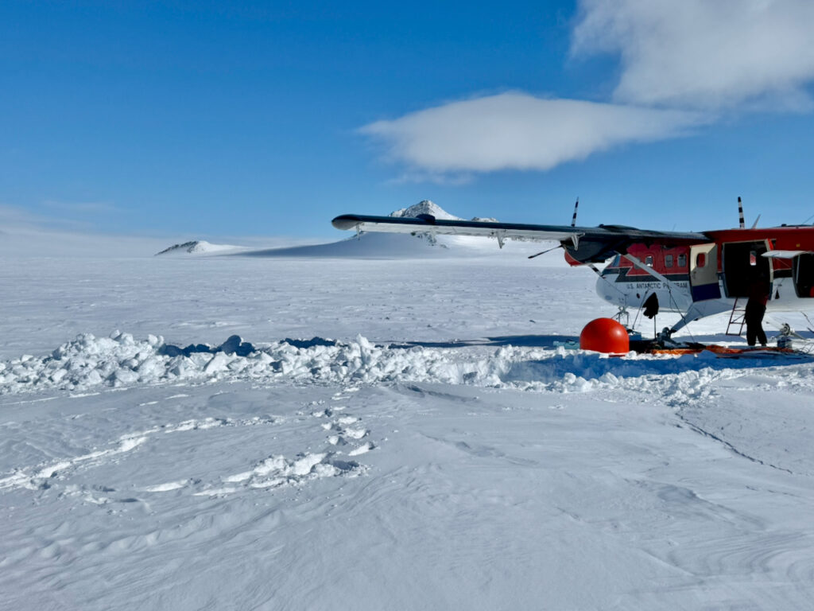
Above: After removal of the seismic station at Howard Nunataks (HOWD), all that remains is disturbed snow. Photo credit: Terry Wilson
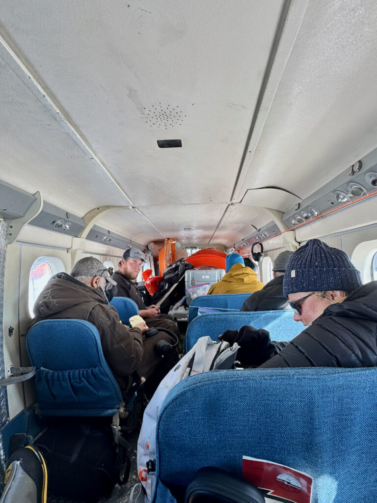
Above: En route back to Union Glacier Camp, the Twin Otter aircraft is full of decommissioned equipment from the seismic site at Howard Nunatak (HOWD). Photo credit: Terry Wilson
Updates From the Field #22: Boomerang!
8 January 2026, ALE Union Glacier Camp, Antarctica
In Antarctica, a “boomerang flight” refers to a flight that is forced to turn back mid-journey—often after coming close to its destination—due to unfavorable weather conditions or technical issues. The term comes from the way the aircraft returns to its point of origin, much like a boomerang. Today the team experienced a boomerang flight attempting to reach the high priority site at Gould Knoll.
Text sent from lead-PI Terry Wilson:
On Jan 8th we tried to hit a window of clear-to-scattered cloud cover in the Inman Nunatak fuel cache and Gould Knoll area, but low clouds prevented landing at INMN. The Twin Otter had to divert to a remote fuel cache at Lower Thwaites Glacier and return to Union Glacier Camp – a triangular ‘boomerang’ flight with no work accomplished. The Gould Knoll site is ~525 nautical miles [~970 kilometers] away from Union Glacier Camp, and although we scour both the meteograms and satellite images to find ‘good enough’ weather, ultimately we only know the reality of site conditions when we arrive!
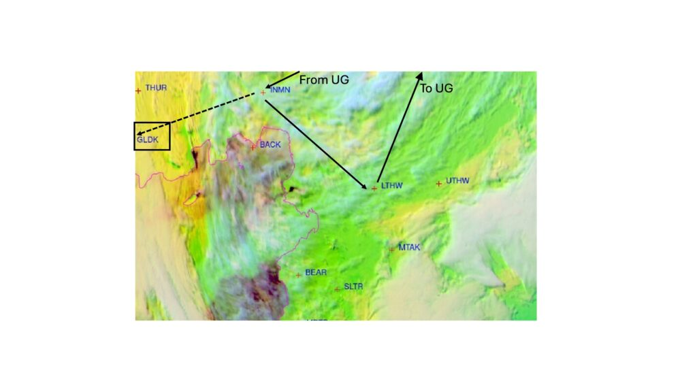
Above: Satellite image map of the Gould Knoll (GLDK) area, and the Inman Nunatak (INMN) and Lower Thwaites Glacier (LTHW) fuel caches. In this satellite image, clear areas are green, high cloud is blue, and low cloud is yellow. Screenshot credit: ALE meteorologists
Updates From the Field #21: Back In Action
7 January 2026, Rambo Nunataks (RMBO), Antarctica
After a week of unfavorable weather, flying operations finally resume. This time, the team travels to Rambo Nunataks to complete decommissioning of the GNSS site there. While the successful completion of a field mission is an accomplishment, it also marks another bittersweet milestone—this site will no longer collect valuable data to help scientists understand changes in Antarctic ice mass.
Text sent from lead-PI Terry Wilson:
After 7 days in a row without flying, on Jan. 7th we were able to make our final trip to Rambo Nunatak to complete the pull out of the GPS system. The GPS was installed in the 2013-14 season in a location adjacent to the Foundation Ice Stream. Our latest analysis shows that the bedrock motion at this site has been speeding up and slowing down over the last several years, tracking the change in the mass of the ice sheet - unfortunately we will no longer have this tracking tool to understand ongoing ice sheet change…..
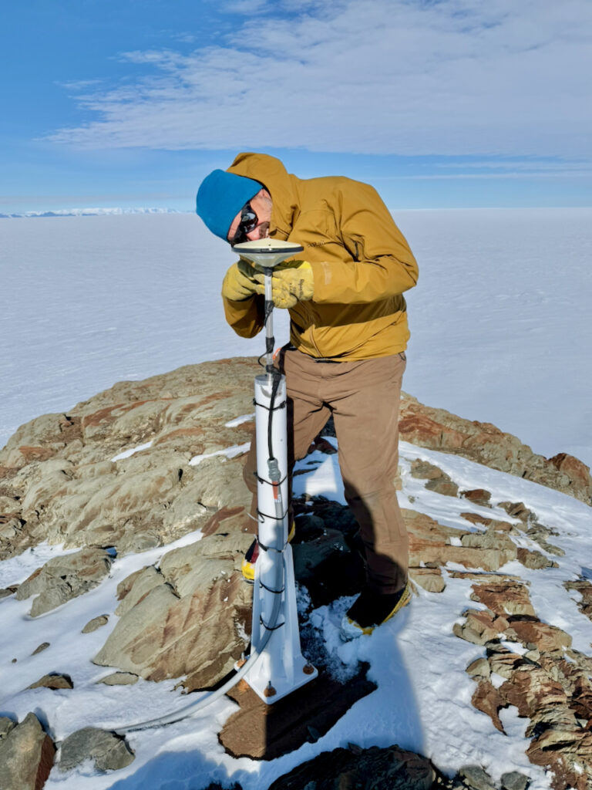
Above: Jim Normandeau removes the GNSS antenna at site RMBO at Rambo Nunataks. Photo credit: Terry Wilson
Above: The team removes the GNSS equipment frame at site RMBO at Rambo Nunataks. Video credit: Terry Wilson
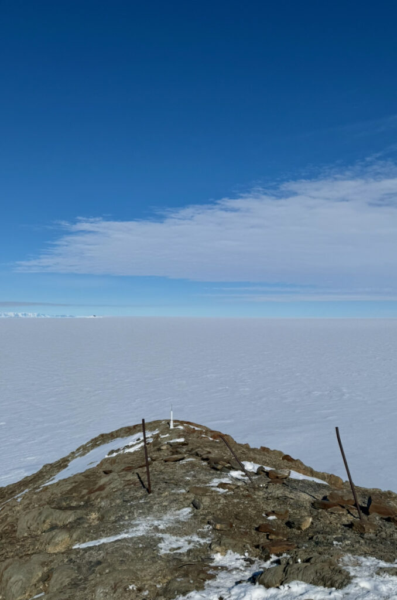
Above: Fully decommissioned GNSS system at site RMBO at Rambo Nunataks. Photo credit: Terry Wilson
Updates From the Field #20: Weather Woes
1-4 January 2026, ALE Union Glacier Camp, Antarctica
In Antarctica, weather isn’t just a variable—it’s the decision-maker. When conditions turn, flights can be grounded for days at a time.
Text sent from lead-PI Terry Wilson:
From New Year’s Eve onward, we have been stuck in camp due to poor weather at our remaining sites. For the next few days, the site forecasts remain quite poor – but since the meteograms are forecast models, we rely heavily on satellite images to check on ‘reality’ at our sites. Unfortunately, over the last few days the sat images have shown more difficult conditions than the forecasts indicate……
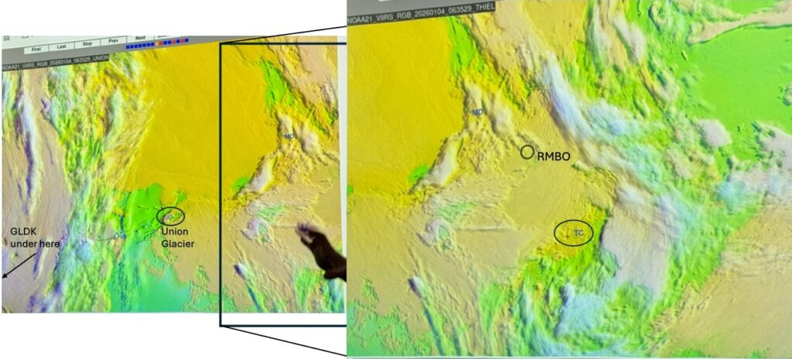
Above: Two satellite images from the morning of 4 January. Photo credit: Terry Wilson. Text sent from lead-PI Terry Wilson: These 2 images show huge areas covered by low cloud or fog – the yellowish areas – as well as middle and high-level clouds ; only the green regions are cloud free. On the regional image , you can see the fog that engulfed Union Glacier Camp this morning, and the large low-pressure system pushing into the continent from the left. The enlarged image shows the widespread clouds over Rambo Nunatak and Thiel Corner Cache , which are about 125 miles or 200 kilometers apart.
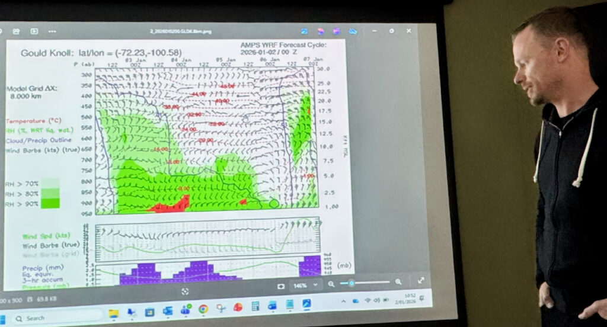
Above: Meteogram for Gould Knoll for a 5-day period. Photo credit: Terry Wilson. Text sent from lead-PI Terry Wilson: The green and red colors on the top diagram denote moisture saturation, correlating with the precipitation of snow shown in blue on the bottom panel. The wind barbs indicate a wind speed of up to 40 knots by the end of the period . The combination of fresh snow and high wind produces ground blizzard conditions.
Updates From the Field #20: Happy New Year!
31 December 2025, ALE Union Glacier Camp, Antarctica
The team enjoys a round of celebratory festivities on New Year's Eve!
Text sent from lead-PI Terry Wilson:
After 2 days without flying due to poor weather, it was New Year’s Eve at Union Glacier Camp. Always a festive event, camp staff carved the signature snow signs – including a countdown clock, put out platforms for dancing, and completed the traditional change from 2025 to 2026. Happy New Year from the field team!
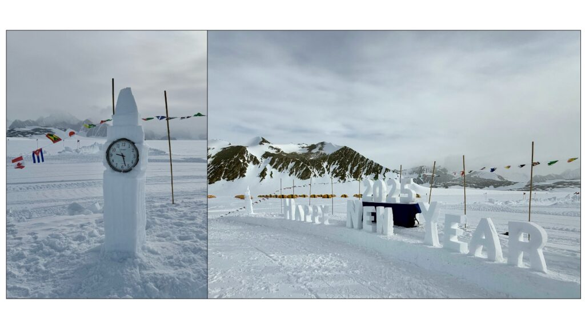
Above: The new year was ushered in with style thanks to the impressive ice signs created by ALE camp staff. Photo credit: Eric Kendrick
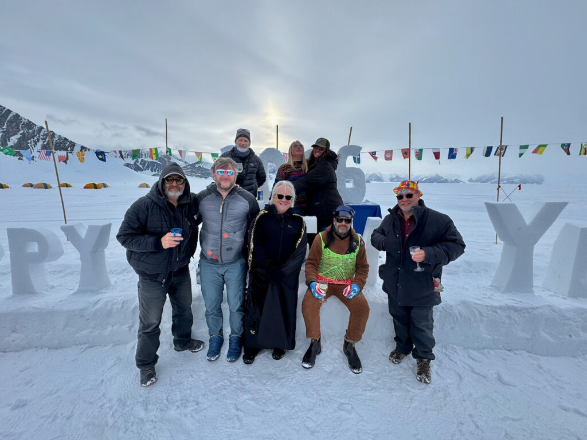
Above: The team celebrates the new year with a toast. Back row (left to right): Eric Kendrick, Erica Lucas, and Marie-France Lavallée. Front row (left to right): Mark Whetu, Nicolas Bayou, Terry Wilson, Jim Normandeau, and Troy Mckerral. Photo credit: Terry Wilson
Above: ALE camp residents enjoy a theatrical display to ring in the new year. Video credit: Eric Kendrick
Updates From the Field #19: Decommissioning Continues
28-29 December 2025, Rambo Nunataks (RMBO) and Stewart Hills (STEW) Antarctica
The team continues to efficiently decommission GNSS sites, completing another flight to Rambo Nunataks and finishing removal of the site at Stewart Hills.
Text sent from lead-PI Terry Wilson:
On the 2nd trip to Rambo Nunataks on the 28th, most of the GPS batteries were removed – a full Twin Otter load. On the 29th we made the final trip to complete the removal of the Stewart Hills GPS site – in spite of cold temperatures with wind and drifting snow, the team took down the whole system quickly and we were off again in just over an hour!
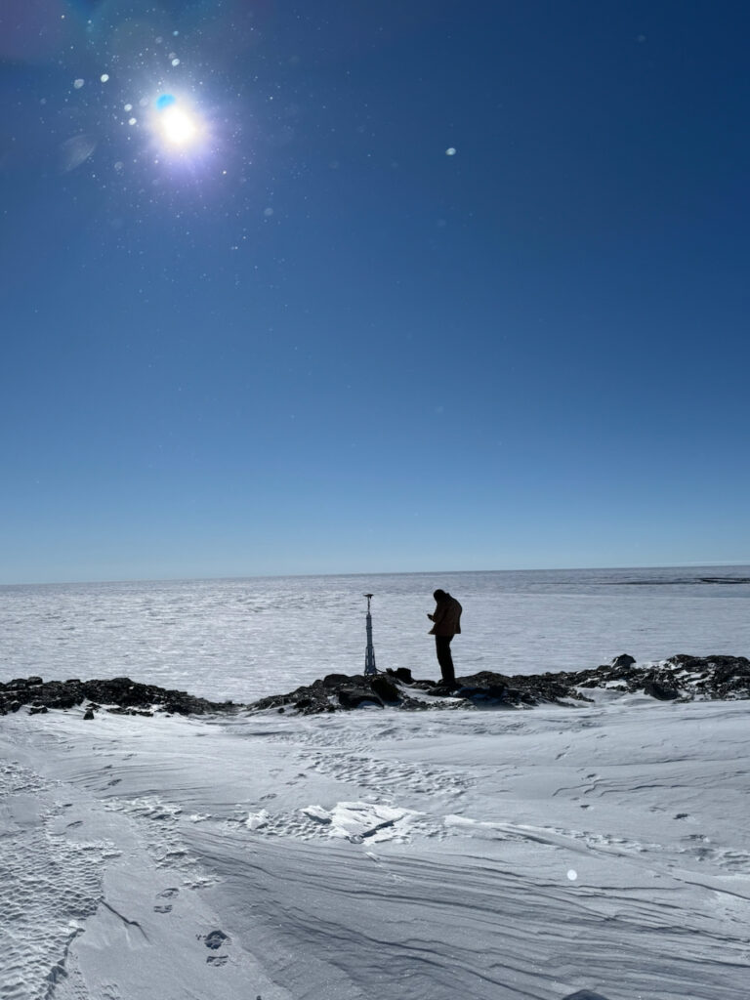
Above: Eric Kendrick begins the process of removing the GNSS antenna from the site at Stewart Hills. Removing the GNSS antenna is the final disabling step—without it, the station cannot receive radio signals from orbiting satellites. Photo credit: Terry Wilson
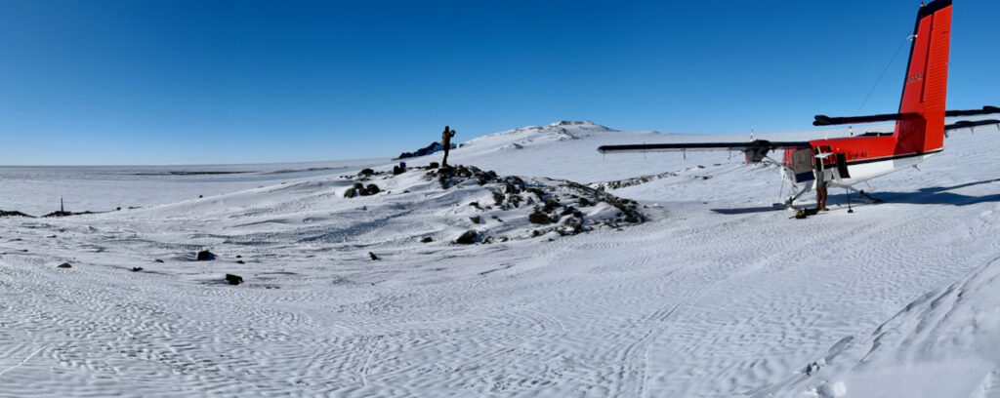
Above: GNSS station STEW at Stewart Hills is full decommissioned. Photo credit: Terry Wilson
Updates From the Field #18: Another Legend Retired
26-27 December 2025, Cordiner Peak (CRDI/DUFK), Antarctica
Another long-standing GNSS site was decommissioned today as the science team removed the Cordiner Peak (CRDI) station. Operational for nearly 25 years, CRDI—like the Pecora Escarpment site—has been a veteran of the network’s long-term observations to monitor and study Antarctic ice mass change and with its removal, direct monitoring ends.
Text sent from lead-PI Terry Wilson:
Two site visits are required to fully remove a GPS system. The first is solely to remove 12-18 of the 22 car batteries used to power these sites through the months of winter darkness. The second trip is to remove the rest of the system components – structural frame, electronics, GPS receiver and antenna, cables, and all the anchoring components that have held it in place. The original Cordiner GPS monument was installed in 2001 as part of the WAGN project and then was replaced by the current system in early 2008 during the International Polar Year. Like the Pecora Escarpment site, nearly 25 years of measurements of the changing position of the CRDI site have been recorded, documenting the motion of the solid bedrock as the ice sheet has changed mass with time. A bit painful for our team to remove this longstanding instrumentation…. The accumulation of equipment we have removed from sites is growing ever larger at the Thiel Corner Cache!
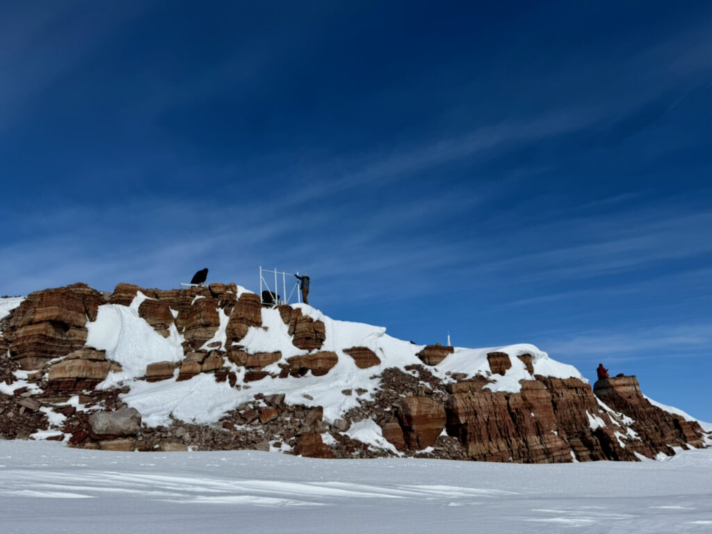
Above: After nearly 25 years of collecting data essential for understanding Antarctic ice mass change, the team removes GNSS site CRDI. Photo credit: Terry Wilson
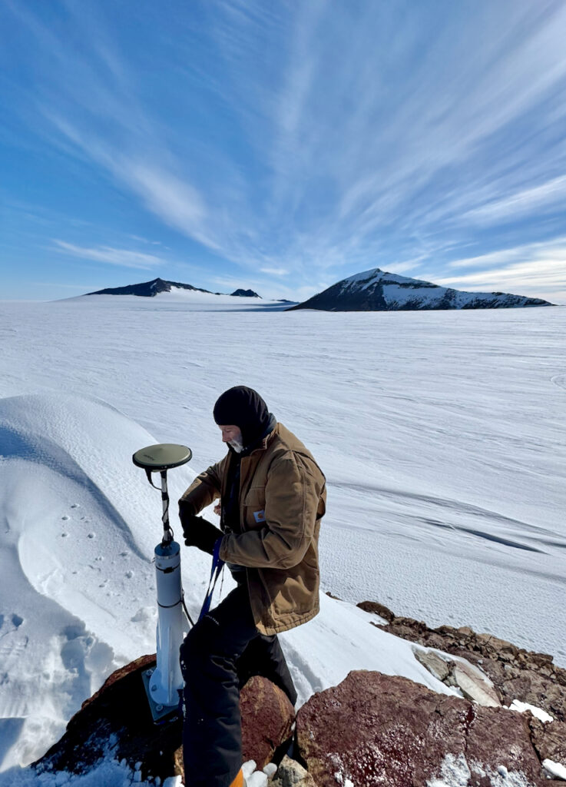
Above: Science team member Eric Kendrick removes the GNSS antenna from site CRDI at Cordiner Peak, marking the end of direct observations of Antarctic ice mass change. Photo credit: Terry Wilson
Above: KBA pilot Troy Mckerral carries a solar panel from the site at Cordiner Peak back to the Twin Otter for transport. Video credit: Terry Wilson
Above: The team removes the GNSS frame from site CRDI at Cordiner Peak. Video credit: Terry Wilson
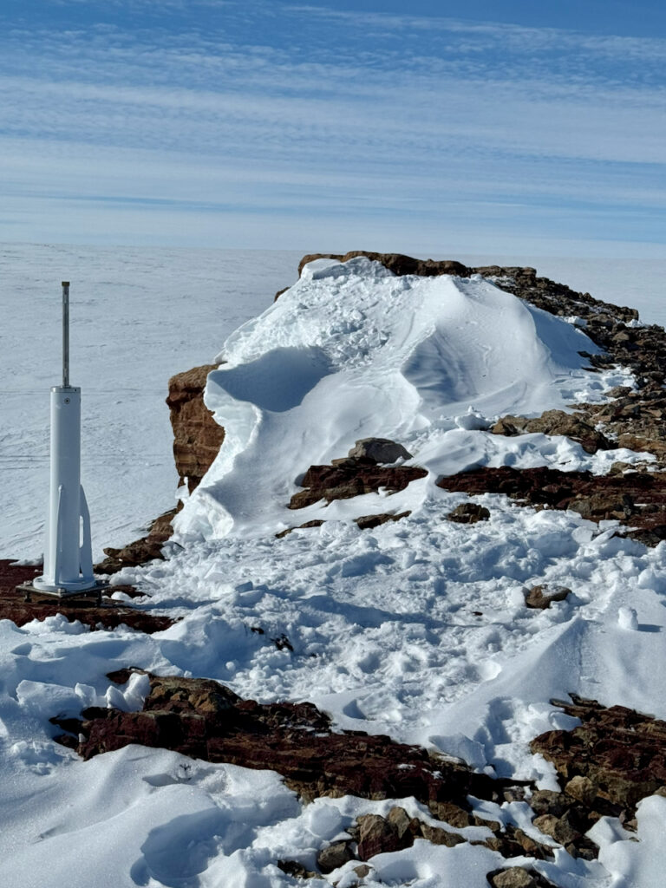
Above: Only the GNSS monument remains in place at site CRDI. Photo credit: Terry Wilson
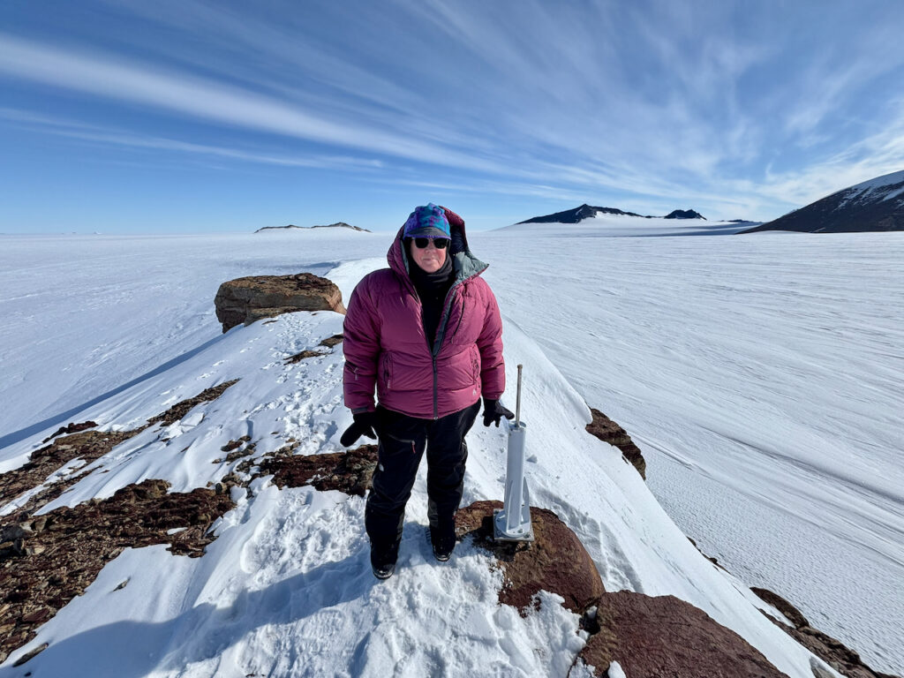
Above: ANET-POLENET lead-PI Terry Wilson stands next to the now-relic monument at GNSS site CRDI. Photo credit: Eric Kendrick
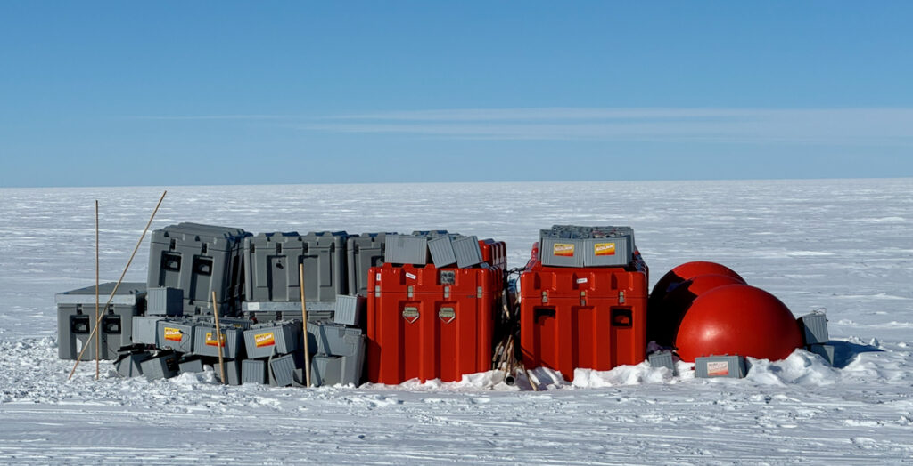
Above: The graveyard of deceased seismic and GNSS equipment at Thiel Corner Cache continues to grow as the ANET-POLENET network is steadily decommissioned. Photo credit: Terry Wilson
Updates From the Field #17: Happy Holidays!
25 December 2025, Cordiner Peak (CRDI/DUFK), Antarctica
The ALE Union Glacier Camp staff consistently amaze, but the holidays give them a chance to truly shine. They create an unforgettable holiday experience featuring delicious food, scenic excursions, and fun games and festive events. Such an impressive display would be remarkable anywhere but is especially extraordinary at the bottom of the world.
Text sent from lead-PI Terry Wilson:
With clients all away from camp, Christmas week is a time for ALE staff to relax, enjoy the amazing surroundings on excursions, and contribute to the homegrown Film Festival, the No Talent Show, and impromptu karaoke nights. The POLENET team is fortunate to be welcomed to participate in all these activities! An amazing Christmas dinner, followed by a ‘secret santa’ gift exchange is always a highlight. Although the weather was snowy at camp through the week, limiting our field work to 3 days, the excursions went on and camp scenery was still beautiful…..
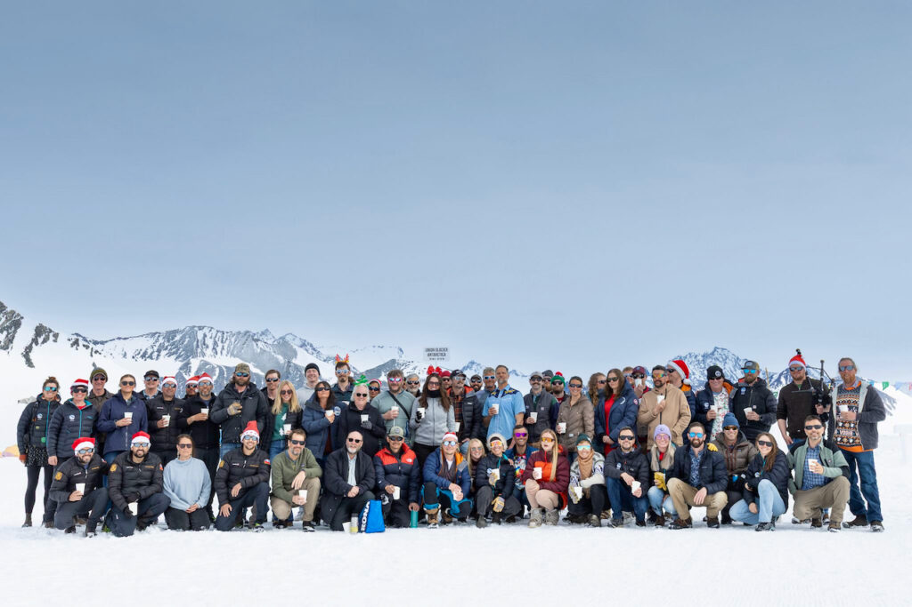
Above: The ALE Union Glacier staff and ANET-POLENET team give a toast to Christmas. Photo credit: Sara Jenner
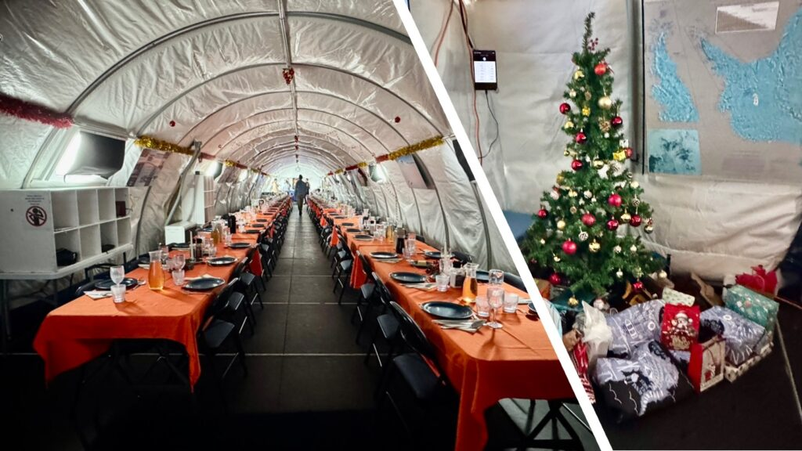
Above: ALE Union Glacier Camp setup up for the holiday dinner and the gift exchange. Photo credit: Terry Wilson
Above: A festive bagpipe holiday prelude. Video credit: Terry Wilson
Above: The team is gathered for the holiday dinner. Video credit: Terry Wilson
Above: The holiday meal featured a stunning spread of delicious food, thanks to the unparalleled talent of the ALE Union Glacier chefs and kitchen staff. Upper-right chef photo credit: Sara Jenner. Photo credit for all other images: Eric Kendrick
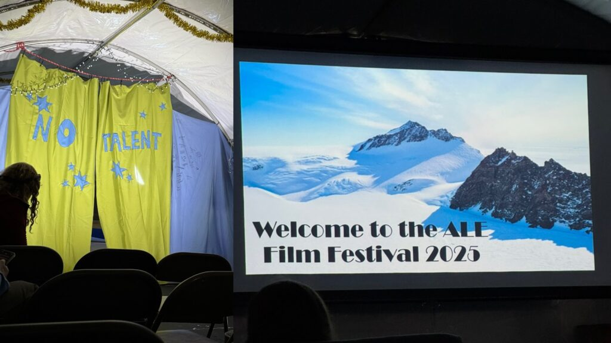
Above: Popular holiday events include the No Talent Show and the Film Festival. Photo credit: Terry Wilson
Above: The ANET–POLENET team’s submission to the 2025 ALE Film Festival.
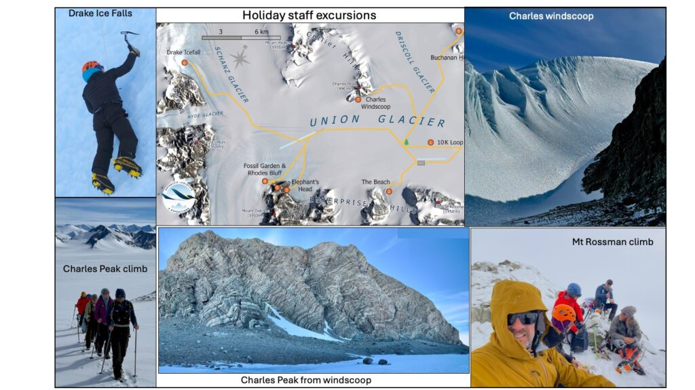
Above: Camp staff and residents have an impressive array of excursions to choose from, each offering an amazing experience and highlighting the stunning landscapes of the Antarctic continent. Photo credits: Mark Whetu, Terry Wilson, Jim Normandeau, and Eric Kendrick
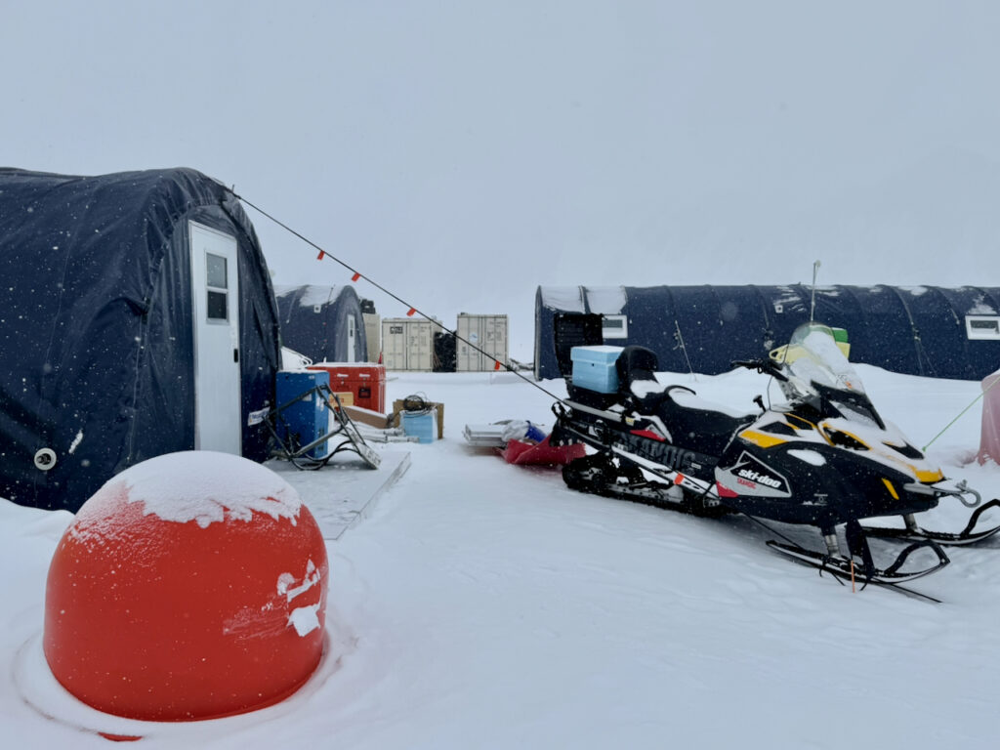
Above: A snowy day at the science tent. Photo credit: Terry Wilson
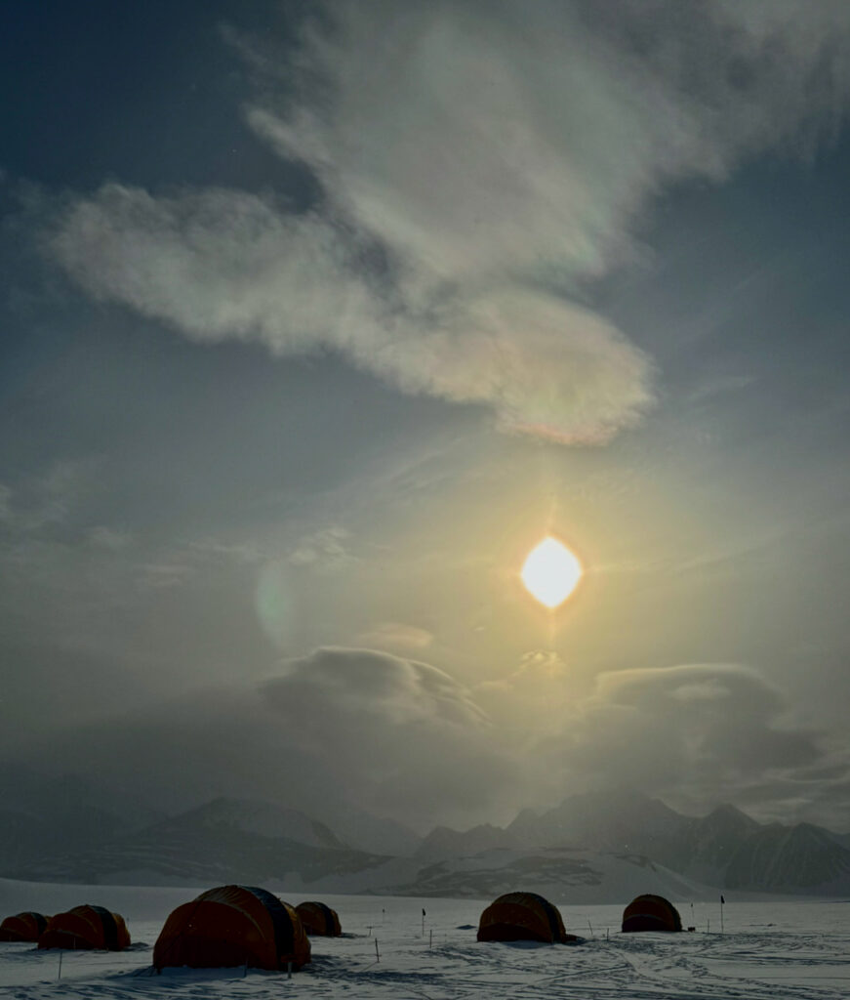
Above: A snowy landscape at ALE Union Glacier Camp. Photo credit: Terry Wilson
Updates From the Field #16: Bittersweet Progress
24 December 2025, Pecora Escarpment (PECE/PECA), Antarctica
Today, the team completed decommissioning of GNSS site PECE. After nearly 25 years of collecting data crucial to understanding ice sheet stability and Antarctica’s vital role in global climate and sea level change, site PECE is no more. While fieldwork continues successfully, the gradual dismantling of the ANET-POLENET network and the retirement of historic sites like PECE—home to decades of invaluable data—cast a bittersweet shadow over the trips, marking the end of direct observations of Antarctic ice mass changes and the conclusion of ongoing data collection.
Text sent from lead-PI Terry Wilson:
The Pecora Escarpment GPS site – PECE – started measurements in 2001 as part of the predecessor WAGN project. It was upgraded to a continuously-recording site with Iridium data transfer as part of the POLENET project in 2008. After nearly 25 years of measurements, PECE was fully decommissioned on the 24th of December. Per an international resolution through the Scientific Committee on Antarctic Research, all GPS monuments remain in place, allowing for future measurements to begin again at the exact point as our previous measurement time series. We arrived at the PECE site to find 30 knot winds and a raging ground blizzard – the team was still able to pull the remaining equipment out and load it on to the Twin Otter in just over an hour. The equipment was delivered to our growing accumulation at the ALE Thiel Corner fuel cache site, for later pick up.
Above: After nearly 25 years of collecting data essential for understanding Antarctic ice mass change, the team removes GNSS site PECE. Video credit: Terry Wilson
Above: The team removes the GNSS frame from site PECE at Pecora Mountains. Video credit: Terry Wilson
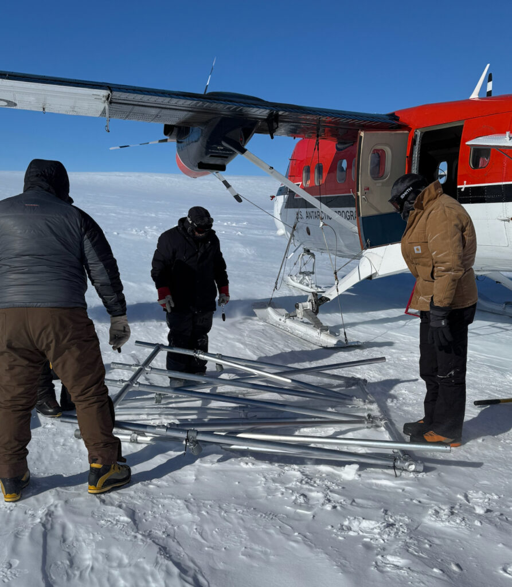
Above: How does this fit in the plane?! The team puzzles over fitting the unusually sized GNSS frame into the Twin Otter. Photo credit: Terry Wilson
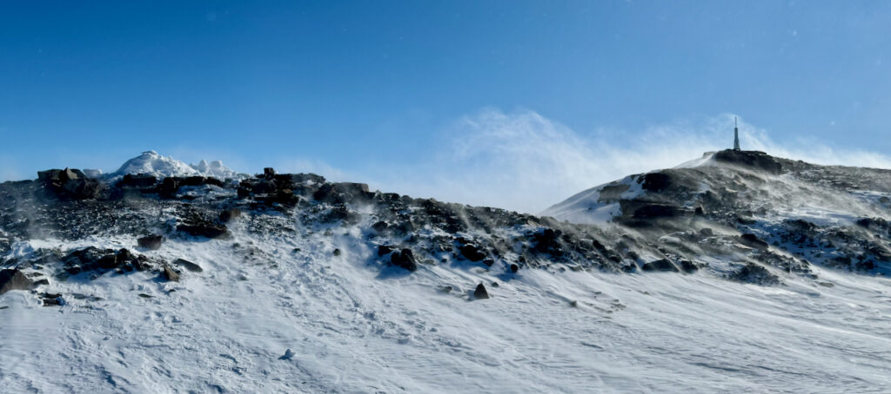
Above: Only the GNSS monument remains in place at site PECE. Photo credit: Terry Wilson
Updates From the Field #15: Steadily Dismantling
22 December 2025, Cordiner Peak (CRDI/DUFK), Antarctica
The team continues to make steady progress on decommissioning sites, this time at Cordiner Peak.
Text sent from lead-PI Terry Wilson:
The team arrived to fine weather at Cordiner Peak, a site in the Pensacola Mountains near the Dufek Massif. The seismic system, originally installed in 2008 during the International Polar Year, was found relatively near the surface and the team quickly had the full system dug out.
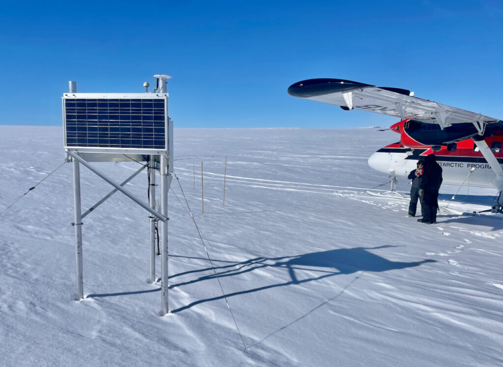
Above: The team arrives at seismic site DUFK at Cordiner Peaks. Photo credit: Jim Normandeau
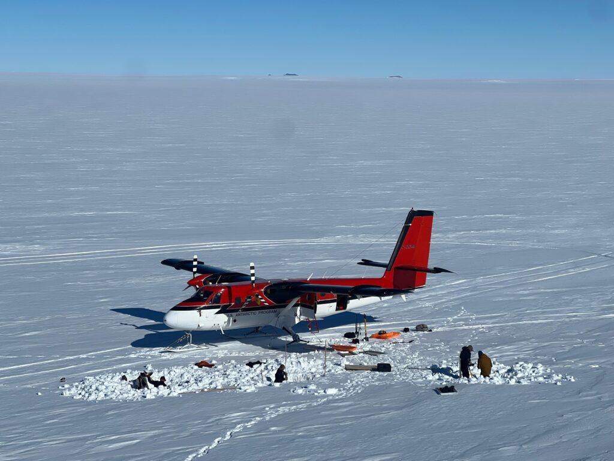
Above: The team works to dig up and decommission the seismic station at Cordiner Peak. Photo credit: Nicolas Bayou
Above: The team excavates buried cables as part of the removal of the Cordiner Peak seismic site. Video credit: Erica Lucas
Updates From the Field #14: Decommissioning Resumes
21 December 2025, Rambo Nunataks (RMBO), Antarctica
Following days of unfavorable weather, the team was able to resume decommissioning efforts, this time at Rambo Nunataks.
Text sent from lead-PI Terry Wilson:
The goal of our first mission to Rambo Nunataks was to remove the seismic system, originally installed in the 2013-14 field season. It is always a relief to arrive and find at least some of the components visible on the surface, meaning it won’t be a huge dig. The seismometer is always the most deeply buried because we don’t raise it to the surface on a site visit if it is fully operational. At this site we succeeded in removing every bit of the system.
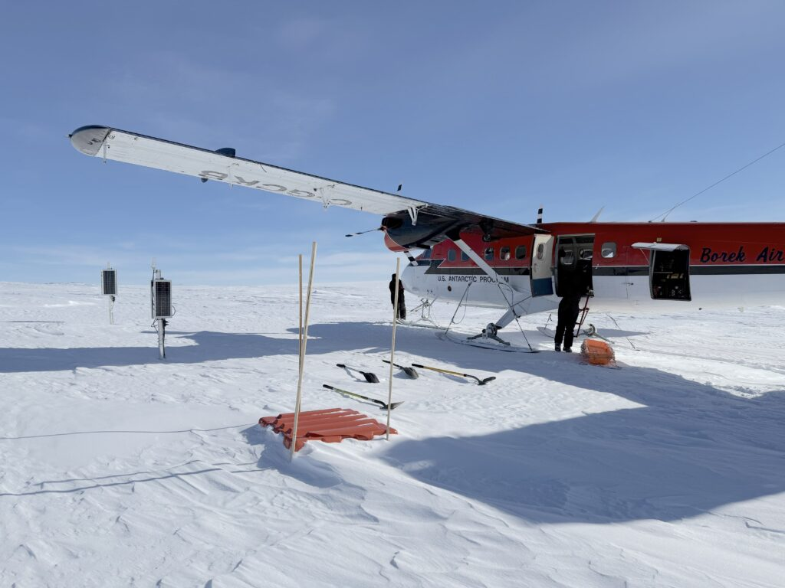
Above: The team arrives at seismic site RMBO at Rambo Nunataks. Photo credit: Eric Kendrick
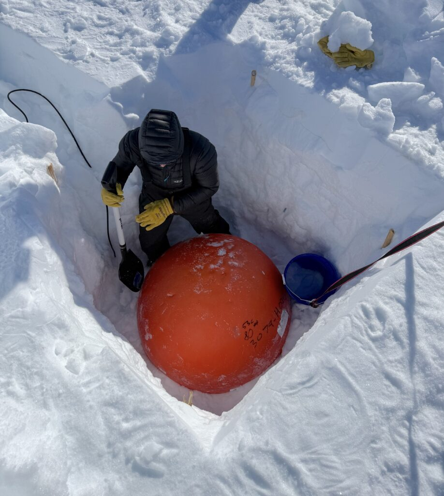
Above: Science team member Eric Lucas digs up the orange dome covering the seismometer at Rambo Nunataks. Photo credit: Eric Kendrick
Updates From the Field #13: Grounded But Not Idle
17 December 2025, Union Glacier (UNGL), Antarctica
Leveraging time in camp while waiting for the weather to clear, the team traveled by skidoo to successfully decommission the Union Glacier seismic site.
Text sent from lead-PI Terry Wilson:
The team took advantage of the ‘no fly’ days to travel by skidoo to the UNGL seismic site near camp. Because the path to the site traverses through some crevassed terrain, the ALE travel safety team had gone out in advance to use ground-penetrating radar to locate and flag a safe route. Team members set off with the field safety folks, dug out and dismantled all the site components, and transported everything back to camp.
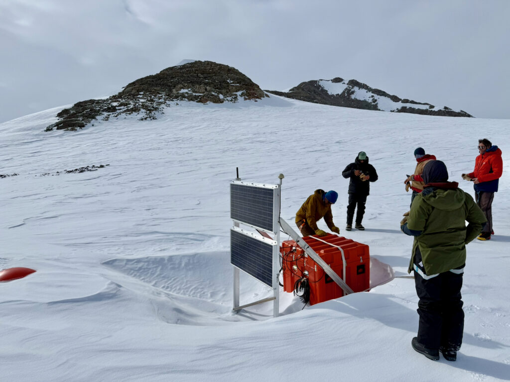
Above: The team arrives at seismic site UNGL at Union Glacier. Photo credit: Eric Kendrick
Above: The team digs through snow to recover seismic equipment at site UNGL. Video credit: Eric Kendrick
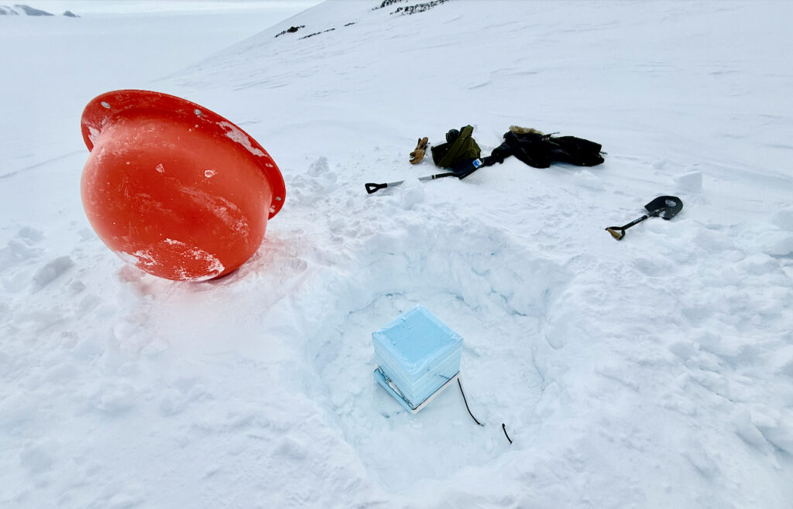
Above: The orange dome covering is removed, revealing the seismometer encased within blue foam insulation boards. Photo credit: Eric Kendrick
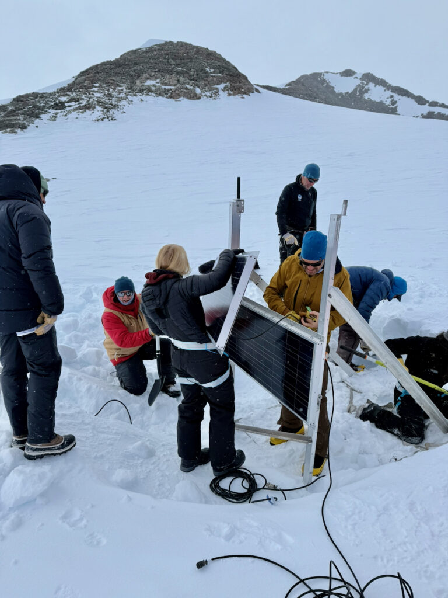
Above: The team dismantles the equipment frame at seismic site UNGL. Photo credit: Eric Kendrick
Above: Transporting equipment from the decommissioned seismic station UNGL back to camp. Video credit: Eric Kendrick
Updates From the Field #12: Antarctic Amenities
15-20 December 2025, ALE Union Glacier Camp, Antarctica
When the weather prevents flying to field sites, the team remains at camp. Between keeping an eye on the forecast and gearing up for the next round of fieldwork, they enjoy the surprisingly delightful comforts of ALE’s Union Glacier Camp. There are no mini-fridges or spa days—but a hot shower and a load of clean laundry are luxuries worth celebrating.
Text sent from lead-PI Terry Wilson:
Inevitably, weather conditions both at Union Glacier Camp and at most field sites we need to visit turned poor. In addition, our run of long flight days drained duty hours available for the KBA pilots. The result: several days spent at camp without flying to our sites.
What happens at camp during periods like this?
The daily ritual of visiting the ALE Meteorology team to check weather continues – usually at 07:45 am and 8:00 pm, often with a mid-morning check to review satellite images for changes in cloud cover.
Meanwhile, around camp, the team takes advantage of the relative luxuries of ALE’s Union Glacier Camp - where amenities are designed to maintain the pristine environment and save energy – including many delicious meals, perhaps a nap, a shower, laundry, or walking/biking……
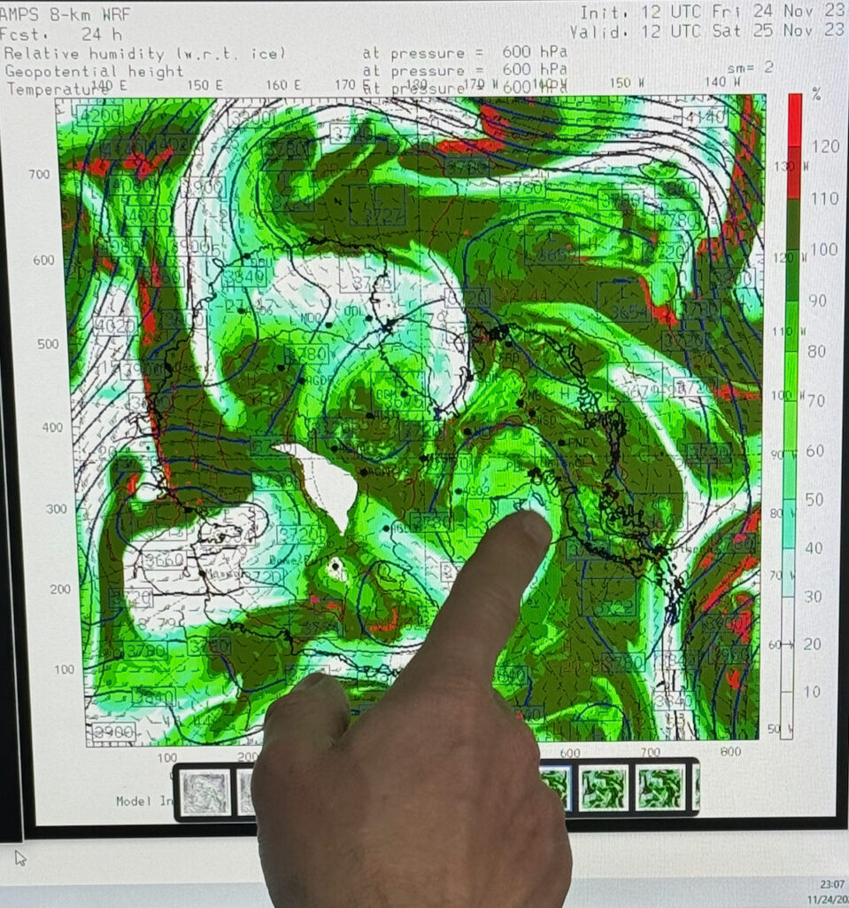
Above: Synoptic weather forecast map. Green is 'moisture' (relative humidity) indicating cloudy conditions, and likely no flying. Photo credit: Terry Wilson
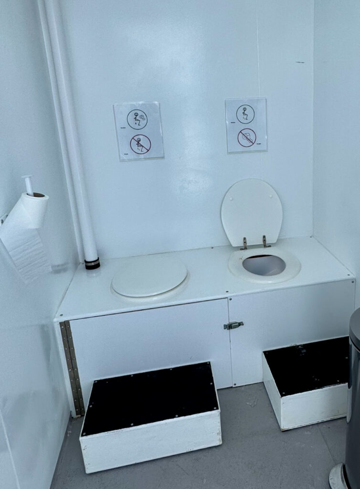
Above: Toilet module at ALE’s Union Glacier Camp. ALE has long been a pioneer in responsible waste management, ensuring that all byproducts are carefully collected and transported off the continent.
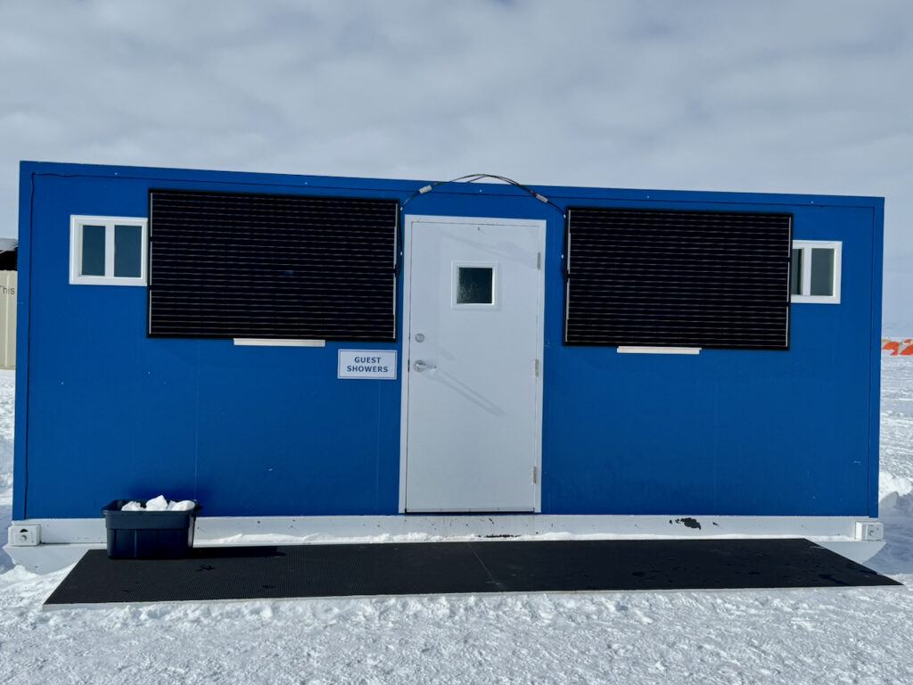
Above: Shower block at ALE Union Glacier Camp. Photo credit: Terry Wilson
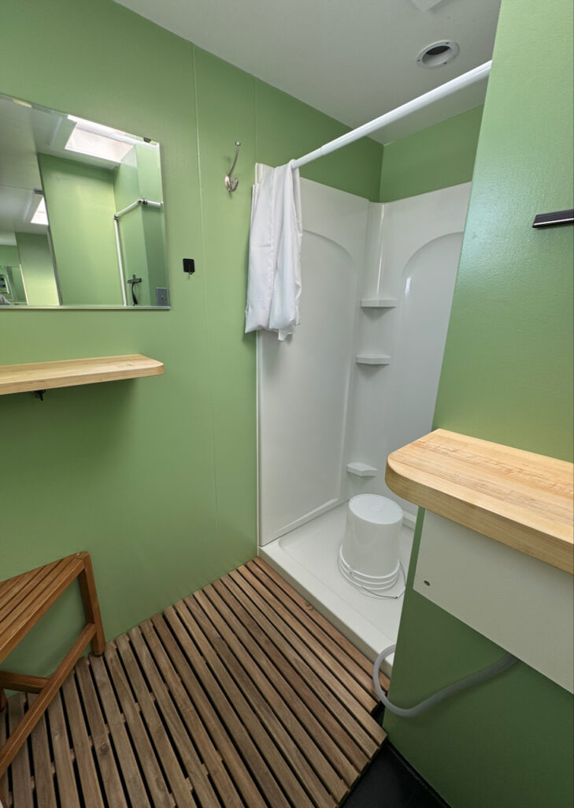
Above: Inside a shower module at ALE Union Glacier Camp. This shower setup is truly the Ritz-Carlton of field camp amenities, far surpassing anything found at most Antarctic field camps. One full bucket of hot water provides a 3-minute shower. Photo credit: Terry Wilson
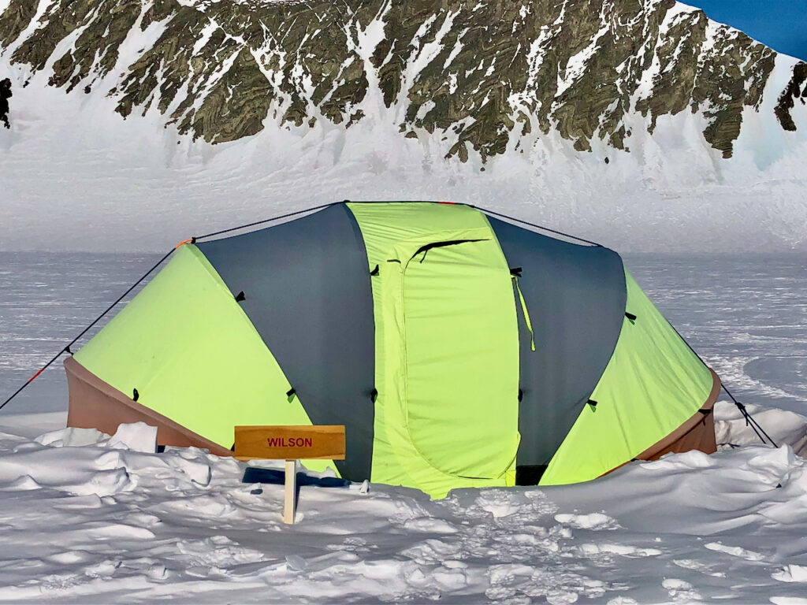
Above: A clam tent at ALE’s Union Glacier Camp. These tents serve as personal sleeping quarters for guests, each thoughtfully named after an Antarctic explorer. This one honors Edward Wilson, who accompanied Robert Falcon Scott on his expeditions. Photo credit: Terry Wilson
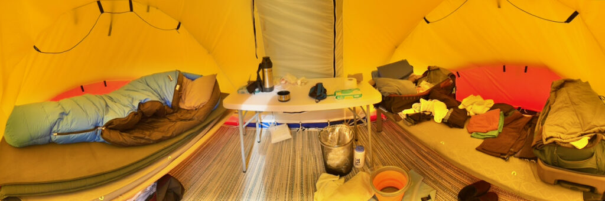
Above: Interior of clam tent at ALE Union Glacier Camp (wide-angle photo). Photo credit: Terry Wilson
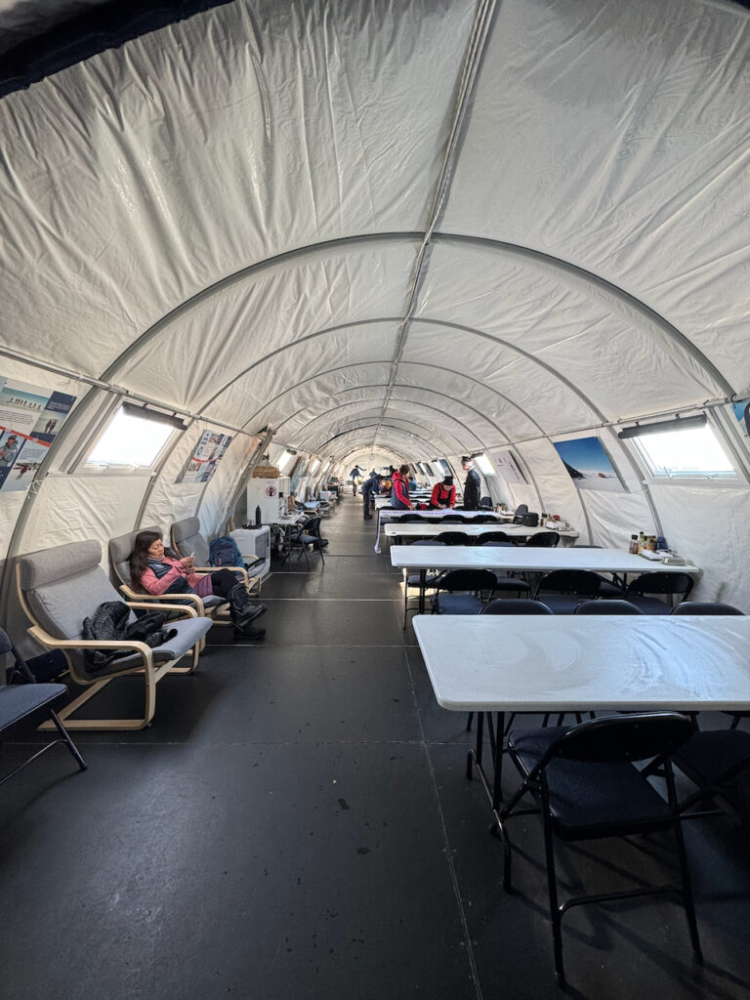
Above: Dining tent at ALE Union Glacier camp. Photo credit: Terry Wilson
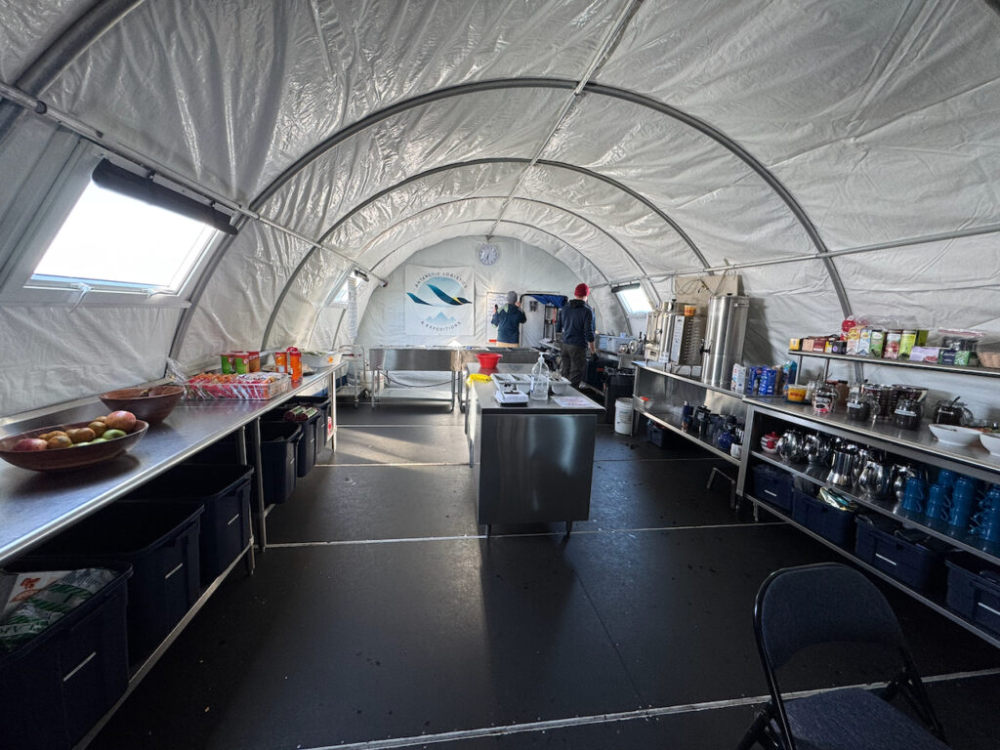
Above: Food service area of the dining tent at ALE Union Glacier Camp. Photo credit: Terry Wilson
Above: Washing clothes at ALE Union Glacier Camp. Photo credit: Terry Wilson
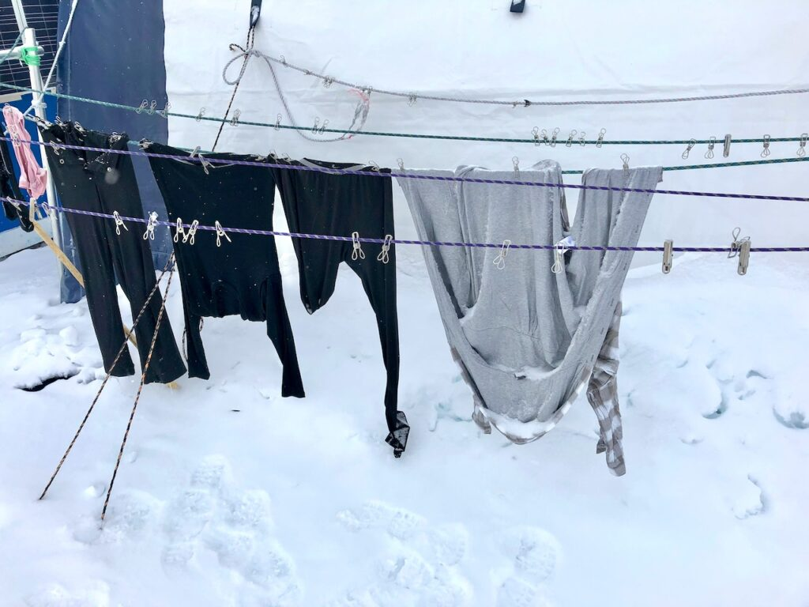
Above: Despite the cold temperatures, moisture from wet clothing readily sublimates, making clotheslines an effective tool. Photo credit: Terry Wilson
Updates From the Field #11: Sun, Vistas, and Productivity
14 December 2025, Martin Peninsula (MRTP), Antarctica
The team had a productive day at Martin Peninsula, digging up the seismic system for decommissioning. Their hard work was matched by sunny skies, calm breezes, and stunning views.
Text sent from lead-PI Terry Wilson:
The ALE meteorologists forecast a clear but windy day in West Antarctica – clear days are few and far between near the coast, so we took their advice and set off for Martin Peninsula. We were treated to beautiful views of the Marie Byrd Land volcanoes and the Pope-Smith-Kohler glaciers feeding the Dotson Ice Shelf – a region with the fastest ice sheet loss in Antarctica. The plane had a turbulent approach to the site, so we were expecting another windy work day. Instead, the site was protected, with no wind, and soon everyone was shedding layers as the shoveling began. It was surprising to find ~6 feet of accumulation in only a year – the system would have been fully buried if the visit was postponed. Given the depth of burial it took ~2 hours to raise the system. With little ground time left, we were unable to reach the seismometer, which was at least twice as deep, since it was not raised to the surface last season. The GPS system at Martin Peninsula remains in good shape and will continue to operate and deliver valuable data until a future visit.
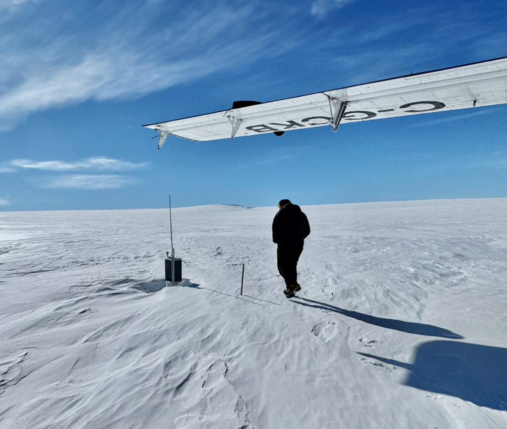
Above: The seismic station at Martin Peninsula is buried but still visible upon arrival to the site. Postponing the visit for another year would have left the system fully buried. Photo credit: Terry Wilson
Above: With sunny skies and calm winds, the field team sheds layers while digging up the seismic system at Martin Peninsula. Video credit: Terry Wilson
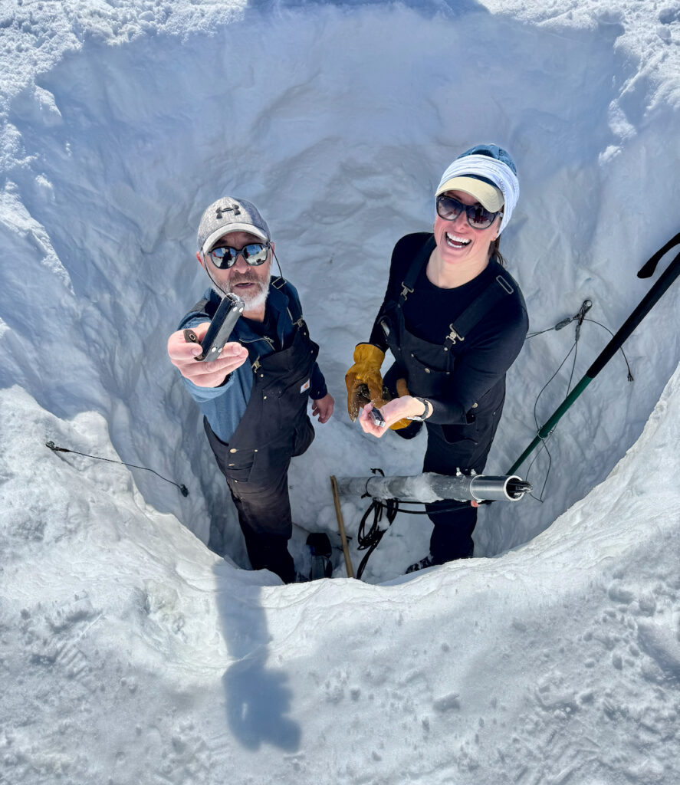
Above: Field safety guide Mark Whetu (left) and ALE pilot Marie-France Lavallée (right) finally reach the bottom of the seismic system solar panel lampshade at Martin Peninsula. Photo credit: Terry Wilson
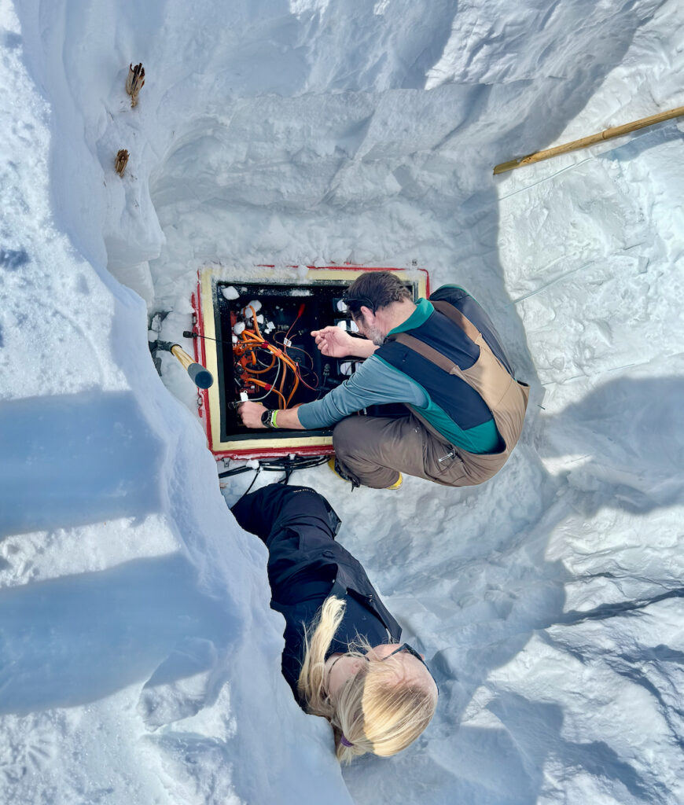
Above: Science team members Erica Lucas (bottom) and Jim Normandeau (top) reach the seismic enclosure buried more than 6 feet deep. Photo credit: Terry Wilson
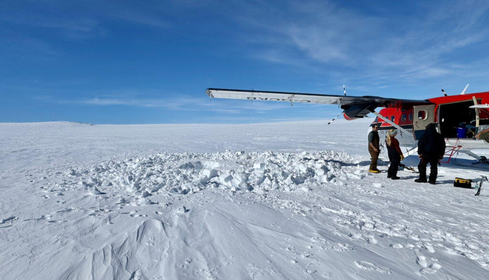
Above: Work at Martin Peninsula is completed for the day. The seismic station at MRTP is completely decommissioned, minus the seismometer. Photo credit: Terry Wilson
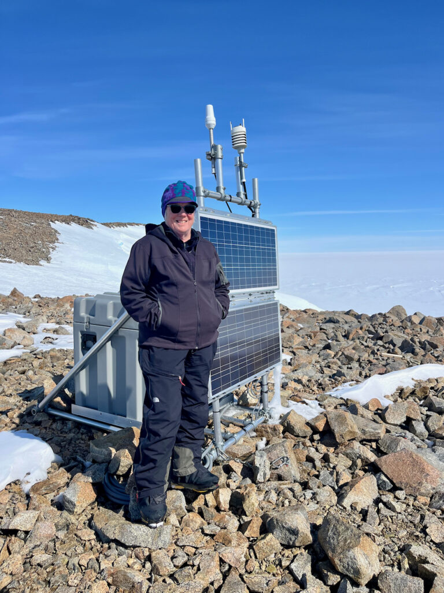
Above: Lead-PI Terry Wilson stands next to the GNSS site at Martin Peninsula. The system will continue to operate until another team can return to the site in the future. Photo credit: Troy Mckerral
Updates From the Field #10: Windy Wonderland
13 December 2025, Pecora Escarpment (PECE/PECA), Antarctica
While the seismic team members remained at camp to participate in the Antarctic Ice Marathon, the GNSS crew returned to Pecora Escarpment to begin decommissioning the GNSS site there.
Text sent from lead-PI Terry Wilson:
It was cold and windy on our 2nd visit to Pecora Escarpment. This time our task was to start pulling out the GPS station, starting with 18 of the 22 batteries that have kept the system operational through each winter since installation in the 2007-08 field season (amazing!).
Returning to the ALE Thiel Corner Cache to refuel and drop off equipment, we enjoyed the incredible luxury of an ‘indoor’ toilet on a cold and windy day!
Above: Perched atop the ridge at Pecora Escarpment, the GNSS antenna towers over a flurry of blowing snow. Video credit: Terry Wilson
Above: Panorama of the GNSS site (PECE) at Pecora Escarpment, with system dismantling underway. Photo credit: Terry Wilson
Above: A rare luxury, the enclosed bathroom facilities at Thiel Corner Cache were a welcome comfort to the field team after a windy day at Pecora Escarpment. More than just a bathroom facility, the cache toilet houses a webcam to track ground conditions for flight planning. The growing cache of equipment resulting from decommissioned ANET-POLENET sites is visible in the background. Photo credit: Terry Wilson
Updates From the Field #9: Marathon On Ice!
13 December 2025, ALE Union Glacier Camp, Antarctica
Another ALE tradition is the Antarctic Ice Marathon, which includes both a full 26.2 mile (42.2 km) marathon and a 13.1 mile (21.1 km) half marathon. Science team members Erica Lucas and Jim Normandeau seized the moment and joined the ranks of 50+ runners from more than a dozen nations.
Text sent from lead-PI Terry Wilson:
Meanwhile, back at Union Glacier, the 20th Antarctic Ice Marathon took place. Team members Erica Lucas and Jim Normandeau completed a full and a half marathon, respectively. The wind was brutal, so extra kudos for finishing!
Above: Carved from snow, signage for the 20th Antarctic Ice Marathon makes a striking statement at ALE Union Glacier Camp. Photo credit: Terry Wilson
Above: Science team member Jim Normandeau participates in the half-marathon event. Video credit: https://www.instagram.com/icemarathon/
Above: Science team member Erica Lucas participates in the full-marathon event. Video credit: https://www.instagram.com/icemarathon/
Updates From the Field #8: Grounded, But Victorious
10-12 December 2025, ALE Union Glacier Camp, Antarctica
After an intense start, the field team is given the opportunity to relax and enjoy some camp activities, including participating in the annual soccer match between ALE and Chile. Coming in clutch, science team member Erica Lucas helped solidify victory for ALE, with a final score of 4-3.
Text sent from lead-PI Terry Wilson:
The KBA pilots work under regulations on both hours in flight and hours on duty, established by the Canadian aviation authority. After our busy start those hours were depleted, mandating ‘no fly’ days on the 10th and 11th. Then on the 12th we had our first flight cancellation due to weather conditions. This period gave the team some time to get organized and have some R&R. Not for all, however - Erica Lucas was a core player in the ALE vs Chile annual soccer match. Unlike many years, ALE was victorious!
Above: The annual soccer match between ALE and Chile. Third from the right, science team member Erica Lucas played for team ALE. Photo credit: Terry Wilson.
Above: Science team member Erica Lucas scores the final goal of the ALE vs. Chile soccer game in a shootout. Video credit: Eric Kendrick
Updates From the Field #7: Seismometer At Large
9 December 2025, Stewart Hills (STEW), Antarctica
The team returns to Stewart Hills to begin decommissioning the GNSS site. Meanwhile, the elusive seismometer remains at large.
Text sent from lead-PI Terry Wilson:
The 2nd of 3 trips to Stewart Hills was made on Tuesday, with 5 team members, to start the pull out of the GPS station. The load the Twin Otter can carry limits the amount of equipment removed on each visit. This trip we were able to take out 18 of 22 batteries powering the GPS system and 2 of the enclosures that held them. The GPS station is still recording until we return to remove the rest of the site components. Meanwhile, Erica and Jim continued to dig deeper to find the seismometer – no luck! We have one more chance on the final site visit. The equipment was stored at the Thiel Corner Cache, where the Otter took on fuel for the trip back to Union Glacier. As the fuel drums are emptied, we take them onboard to return to camp.
Above: The science team carries decommissioned batteries back to the Twin Otter for transport. Photo credit: Eric Kendrick
Above: With most of the batteries and enclosures removed, the remaining GNSS equipment is scheduled for decommissioning on the next site visit. Photo credit: Eric Kendrick
Above: Science team member Erica Lucas stands in a hole excavated while searching for the seismometer at Stewart Hills. Photo credit: Jim Normandeau
Above: Empty fuel drums are loaded on the Twin Otter for transport back to camp. Video credit: Erica Lucas.
Above: The Twin Otter aircraft is fully loaded after completing a second decommissioning flight to Stewart Hills. Photo credit: Erica Lucas
Updates From the Field #6: Pit-Crew Speed
8 December 2025, Pecora Escarpment (PECE/PECA), Antarctica
Another successful mission for the science team, this time at Pecora Escarpment. Clocking in at less than an hour to fully dig up the seismic system, this all-star team is working faster than an Indy 500 pit crew on race day!
Text sent from lead-PI Terry Wilson:
The first of 3 planned trips to Pecora Escarpment was made on Monday with 5 team members. After all these years, it was Terry’s first site visit – a spectacular location! Due to windy conditions at Pecora, ablation had exposed the seismic system components at the surface. Another record set – only 45 minutes to bring everything to the surface! After only 1 hour 45 minutes on site, we had the plane loaded and were off deck for the ALE Thiel Corner Cache . Outside of the electronic components, the rest of the equipment is being transported and stored at this cache site and will be picked up by a USAP Basler aircraft later in the season for return to South Pole and then McMurdo Station. We also refuel at this site to make the return flight to Union Glacier.
Above: Footage captured from a Twin Otter aircraft on approach to Pecora Escarpment, as the GNSS system comes into view toward the end. Video credit: Eric Kendrick.
Above: The seismic station at Pecora Escarpment upon arrival. Photo credit: Terry Wilson
Above: KBA pilot Marie-France Lavallée (left) and science team member Eric Kendrick (right) remove the dome covering the seismometer. Video credit: Terry Wilson
Above: The seismometer at Pecora Escarpment after removal from beneath the surface. Photo credit: Terry Wilson
Above: Nothing but snow remains after the removal of the seismic station at Pecora Escarpment. Photo credit: Terry Wilson
Above: The KBA crew fills up at the Thiel Corner Cache. This gas station may not have the typical creature comforts like hot coffee and donuts, but the view is worth the stop! Photo credit: Terry Wilson
Updates From the Field #5: Quick Work and Defying the Odds
7 December 2025, Mount Takahe (MTAK) and Lower Thwaites Glacier (LTHW), Antarctica
Work keeps moving forward as the team efficiently decommissions the seismic site MTAK on the flank of Mount Takahe. In a surprise twist, the team stopped to refuel at Lower Thwaites Glacier and found the GNSS site there is defying the odds by still functioning despite being buried beneath the snow.
Text sent from lead-PI Terry Wilson:
The full team flew to our Mount Takahe site on Sunday. We stopped at the remote fuel cache at Lower Thwaites Glacier to refuel en route. Remarkably, the GPS system LTHW that is at that location was nowhere to be seen, even though it is still intermittently broadcasting its position – apparently only just buried beneath the snow surface, but still operational!
The Mt Takahe seismic site was relatively near the surface and the team was able to dig out all the components in only an hour. The valuable electronics components of each seismic system come back with us to Union Glacier, to be shipped back to the EarthScope facility for future deployments in other projects.
Above: The Lower Thwaites Glacier GNSS site (LTHW) is under the snow somewhere. Despite being buried beneath the surface, the site tenaciously continues to function. Photo credit: Terry Wilson
Above: The team begins digging at site MTAK to decommission the seismic station. Photo credit: Terry Wilson
Above: The team continues to dig at site MTAK to decommission the seismic station. Video credit: Terry Wilson
Above: Science team member Jim Normandeau retrieves the seismometer at site MTAK on Mount Takahe.
Above: Disrupted snow is all that remains after removal of the seismic station MTAK at Mount Takahe. The GNSS site (also with a 4-character ID of MTAK) can be seen in the distance just under the wing of the plane.
Updates From the Field #4: Sunny Skies, Smooth Work
6 December 2025, Whitmore Mountains (WHIT/WHTM), Antarctica
Progress continues as the team completely decommissions the seismic station at Whitmore Mountains (WHIT). Capitalizing on the plane landing near the site, along with ideal snow and weather conditions, the team was also able to make a quick check of the GNSS site (WHTM) after efficiently completing the seismic work.
Text sent from lead-PI Terry Wilson:
Seismic station WHIT was installed at the Whitmore Mountains site in the 2009-10 field season and has been operational and providing us with data for 16 years. On Saturday, five of the team went to the site, dug out and removed the full seismic system. Fortunately, the seismic components were not deeply buried at this site and the full system was retrieved, including the seismometer. The GPS system will continue to operate until another team can return to the site in the future.
Above: Science team members Jim Normandeau and Erica Lucas dig to remove buried seismic equipment at the seismic site (WHIT) at Whitmore Mountains. The GNSS system (site WHTM) is visible on the ridgeline to the left of the plane wing. Photo credit: Eric Kendrick
Above: Science team member Jim Normandeau and KBA pilot Marie-France Lavallée take a well-deserved drink break after bringing the seismic system components to the surface at Whitmore Mountains. Photo credit: Troy Mckerral

Above: From left to right, KBA pilot Troy Mckerral and science team members Nicolas Bayou and Erik Kendrick complete a quick check of the GNSS site (WHTM) at Whitmore Mountains. Photo credit: Troy Mckerral
Updates From the Field #3: No Time To Spare
5 December 2025, Stewart Hills (STEW), Antarctica
Opting to take advantage of blue skies and calm winds, work started the very next morning after arrival to camp. With an experienced team and the stellar support of ALE camp staff, including having the team science tent set up and cargo staged outside prior to the group's arrival, operations kicked off flawlessly.
Despite hard snow and deeply buried equipment, the team managed to decommission much of the seismic system at site STEW. A challenging but productive start to the season.
Text sent from lead-PI Terry Wilson:
The USAP KBA Twin Otter with pilots Troy Mckerral and Marie-France Lavallée had arrived UG on 30th November and they were ready to start our field missions, so we scrambled, checked weather, and were ready to fly to Stewart Hills the day after arriving at Union Glacier. After a 2.5 hour flight we arrived to cold and windy conditions, with drifting snow. Our first task at site STEW was to pull out the complete seismic system, which was installed in the 2013-14 field season. The components were buried deeper than expected and the snow was very hard, so we had a challenging task. We had to apply all our tools: shovels of all shapes and sizes, chain saws, an ice auger, and an ice chipper. After 5 hours of digging, we succeeded in retrieving the solar ‘lampshade’ systems, the large enclosure housing electronics and batteries, but were not able to get deep enough to locate the seismometer in the time available. We plan 2 more trips back to this site to remove the GPS system so, time permitting, we may yet find that seismometer. We then flew to the ALE ‘Thiel Corner Cache’ near the Thiel Mountains to refuel and drop off the equipment for later pick up by the USAP, returning to UG at 9pm. A long first day!
Above: The team begins digging at site STEW to decommission the seismic station. Photo credit: Terry Wilson
Above: After extensive digging, science team member Jim Normandeau reaches for the seismometer cable at site STEW. Photo credit: Terry Wilson
Above: Mark Whetu uses a black plastic case to get granular snow out of the base of the hole that would not stay on a shovel. Photo credit: Terry Wilson
Above: KBA pilot Troy Mckerral uses an ice auger to try and locate the buried seismometer. Photo credit: Terry Wilson
Above: KBA pilot Marie and science team member Erica Lucas continue digging for the seismometer. Photo credit: Terry Wilson
Above: Work is completed for the day. The seismic station at STEW is completely decommissioned, minus the seismometer. Photo credit: Terry Wilson
Updates From the Field #2: Welcome to Antarctcia!
4 December 2025, ALE Union Glacier Camp, Antarctica
The final leg of travel to Antarctica is often on military aircraft, where utility is prioritized over comfort - no flight attendants, large windows, or snack service on these flights. Rather than business as usual, for their final segment the team was treated to a commercial aircraft flight, complete with stunning views!
Text sent from lead-PI Terry Wilson:
The team flew from Punta Arenas to the blue ice runway at Union Glacier on an Icelandair Boeing 757 aircraft chartered by ALE. For those who know more typical Antarctic transport, the height of luxury! It was a clear day and we had a good view of Union Glacier Camp flying in.
Above: ALE check-in at the airport. Photo credit: Terry Wilson
Above: Lead-PI Terry Wilson's boarding pass for the flight to Union Glacier, Antarctica. Photo credit: Terry Wilson
Above: View of Union Glacier Camp from the window of the plane. Photo credit: Terry Wilson
Above: The team and other camp passengers arrive at the Union Glacier blue ice runway. Photo credit: Terry Wilson
Updates From the Field #1: The Journey Begins
1 December 2025
All members of the field team have assembled in Chile—next stop, Antarctica.
Text sent from lead-PI Terry Wilson:
The field team made the long trip south to Punta Arenas, located on the Strait of Magellan in southern Chile. Terry was treated to a beautiful clear day flying along the southern Andes and over the Patagonian Ice Cap – fabulous views! Field Safety Guide Mark Whetu was the advance crew to check over all our science cargo and field gear, before transfer to ALE for onward transport to Union Glacier, Antarctica. After the rest of the team arrived, we collected our ‘extreme cold weather’ clothing, reviewed our field season plans and enjoyed Punta Arenas hospitality.
Above: View from the plane window eastward over the Patagonian Ice Cap toward Lago Argentino. Photo credit: Terry Wilson
Above: The Fitzroy granite massif, including Cerro Chaltén and Cerro Torre. Photo credit: Terry Wilson
Above: Field gear staged at the USAP warehouse in Punta Arenas, Chile. Photo credit: Mark Whetu
Above: Keeping with tradition, the team visits the memorial to Ferdinand Magellan to ensure safe passage from Punta Arenas to Antarctica. Pictured above from left to right: Science team members Jim Normandeau, Eric Kendrick, Erica Lucas, Terry Wilson, Nicolas Bayou, and Mark Whetu (field safety guide) assemble in front of the Ferdinand Magellan statue before departing for Antarctica. Photo credit: Terry Wilson